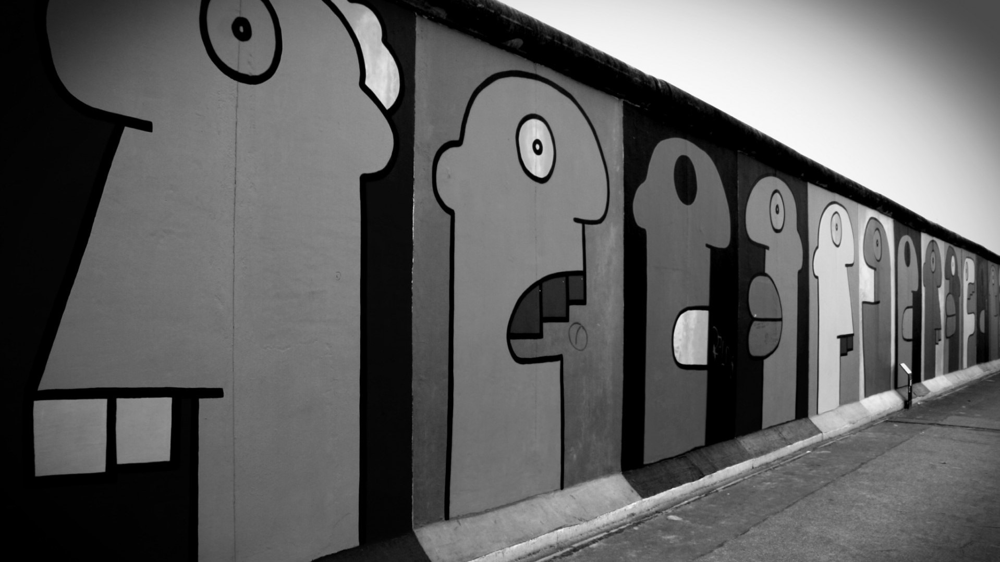

If the world had been a garden, Berlin would be the rose of this garden... I have chosen Berlin to introduce you because this lovely city has great history, great people and dessert that carries its own name: Berliner.
Visit Brandenburg Gate
Brandenburg Gate is the signature of Berlin city. This historical gate has been built in 1791. Brandenburg Gate is one of the famous landmarks of Berliner's. If you are planning to come to Berlin, don't forget to see this splendid building.
Don't Forget Berlin Cathedral
This structure reflects all Berlin's art conception, history. Its building process dates back to 1700s. However, Berlin Cathedral has been damaged during the world war II. After restoration process, it has gotten its current appearance.
Currywurst
Maybe you may know about the sausage culture of Germany. But this is indigenous to Berlin.
Doner Kebab
Actually, doner is originally Turkish food . But in Berlin, doner is made with special sauces and it makes this kind of doner special.
BERLIN WALL
